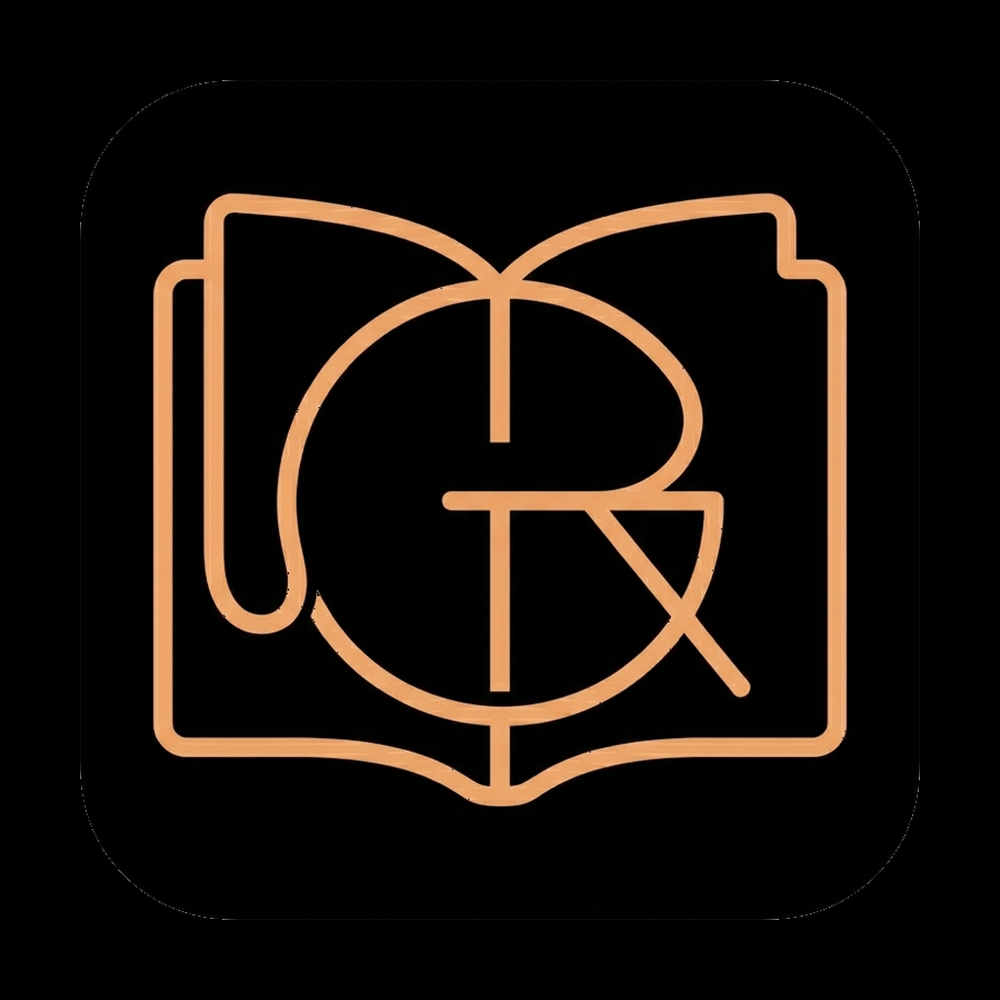

Ik lees graag, en ik wilde zelf een app bouwen. Grim Reader is wat daaruit kwam: een e-reader die ik elke dag gebruik, en die beter wordt door de ideeën die ik onder het lezen krijg.
I love reading, and I wanted to build an app myself. Grim Reader is what came of it: an e-reader I use every day, and that gets better through the ideas I have while reading.
Ich lese gern, und ich wollte selbst eine App bauen. Grim Reader ist daraus entstanden: ein E-Reader, den ich jeden Tag benutze und der durch die Ideen besser wird, die mir beim Lesen kommen.
Mijn boeken staan op mijn eigen server, in Grimmory. Een fijne plek om een verzameling te beheren, maar ik wilde ze ook prettig kunnen lezen op mijn iPhone en iPad. Ik had al langer zin om zelf een app te maken, en een lezer voor mijn eigen boekenkast leek me het mooiste begin: iets wat ik zelf elke dag zou gebruiken.
My books live on my own server, in Grimmory. A great place to manage a collection, but I also wanted to read them comfortably on my iPhone and iPad. I'd wanted to make an app of my own for a while, and a reader for my own bookcase seemed the best place to start: something I would use myself every day.
Meine Bücher liegen auf meinem eigenen Server, in Grimmory. Ein schöner Ort, um eine Sammlung zu verwalten, aber ich wollte sie auch bequem auf iPhone und iPad lesen. Ich hatte schon länger Lust, selbst eine App zu machen, und ein Reader für mein eigenes Bücherregal schien mir der schönste Anfang: etwas, das ich selbst jeden Tag benutzen würde.
In juni 2026 kon de eerste versie boeken van de server halen en offline openen. Meer niet. De rest kwam tijdens het lezen.
In June 2026 the first version could fetch books from the server and open them offline. Nothing more. The rest came while reading.
Im Juni 2026 konnte die erste Version Bücher vom Server holen und offline öffnen. Mehr nicht. Der Rest kam beim Lesen.
Zo werkt het eigenlijk altijd: ik lees, ergens schuurt iets, en ik denk "dat zou de app voor me kunnen doen". Dat idee schrijf ik op, ik bouw het, en de volgende avond lees ik ermee. Bijna alles wat Grim Reader kan, begon zo:
It almost always works like this: I'm reading, something rubs, and I think "the app could do that for me". I write the idea down, build it, and the next evening I read with it. Nearly everything Grim Reader can do started that way:
Eigentlich läuft es immer so: Ich lese, irgendwo hakt etwas, und ich denke „das könnte die App für mich tun“. Ich schreibe die Idee auf, baue sie, und am nächsten Abend lese ich damit. Fast alles, was Grim Reader kann, hat so angefangen:
Zo zijn er sinds juni ruim driehonderd versies verschenen. Veel kleine stapjes, elk begonnen bij iets wat ik tijdens het lezen miste.
That's how more than three hundred versions have appeared since June. Lots of small steps, each one starting from something I missed while reading.
So sind seit Juni über dreihundert Versionen erschienen. Viele kleine Schritte, jeder ausgehend von etwas, das mir beim Lesen fehlte.
Wat voor mij prettig leest, moet dat ook doen voor iemand die grotere letters nodig heeft of met VoiceOver leest. Grim Reader volgt WCAG 2.2 niveau AA: Dynamic Type, eigen lettertype en regelafstand, licht en donker, nette labels voor VoiceOver en voorlezen met de zin die klinkt in beeld.
What reads well for me should also work for someone who needs larger text or reads with VoiceOver. Grim Reader follows WCAG 2.2 level AA: Dynamic Type, your own typeface and line spacing, light and dark, proper labels for VoiceOver, and read-aloud with the spoken sentence in view.
Was sich für mich gut liest, soll auch für jemanden funktionieren, der größere Schrift braucht oder mit VoiceOver liest. Grim Reader folgt WCAG 2.2 Stufe AA: Dynamic Type, eigene Schriftart und Zeilenabstand, hell und dunkel, saubere Beschriftungen für VoiceOver und Vorlesen mit dem gesprochenen Satz im Blick.
Ik wil niet dat iemand meeleest. Grim Reader verzamelt geen gegevens, heeft geen tracking en geen advertenties. Vertalen, samenvatten en zoeken op betekenis gebeuren allemaal op het toestel. De app praat alleen met de servers die je zelf instelt.
I don't want anyone reading over my shoulder. Grim Reader collects no data, has no tracking and no ads. Translating, summarising and searching by meaning all happen on the device. The app only talks to the servers you set up yourself.
Ich will nicht, dass jemand mitliest. Grim Reader sammelt keine Daten, hat kein Tracking und keine Werbung. Übersetzen, Zusammenfassen und Suchen nach Bedeutung geschehen alle auf dem Gerät. Die App spricht nur mit den Servern, die du selbst einrichtest.
Heb je zelf een idee dat onder het lezen opkwam? Ik hoor het graag via het contactadres hieronder.
Had an idea of your own while reading? I'd love to hear it at the contact address below.
Ist dir selbst beim Lesen eine Idee gekommen? Ich freue mich über eine Nachricht an die Kontaktadresse unten.
Meer over Grim Reader & aan de slag ›